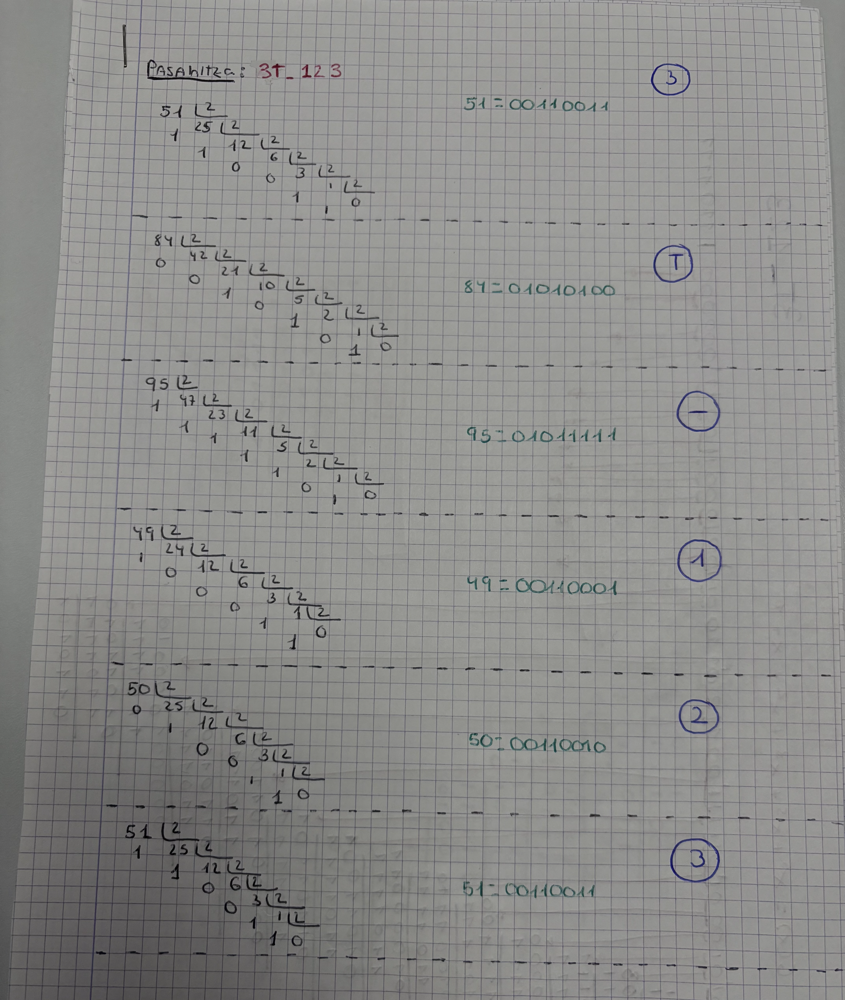
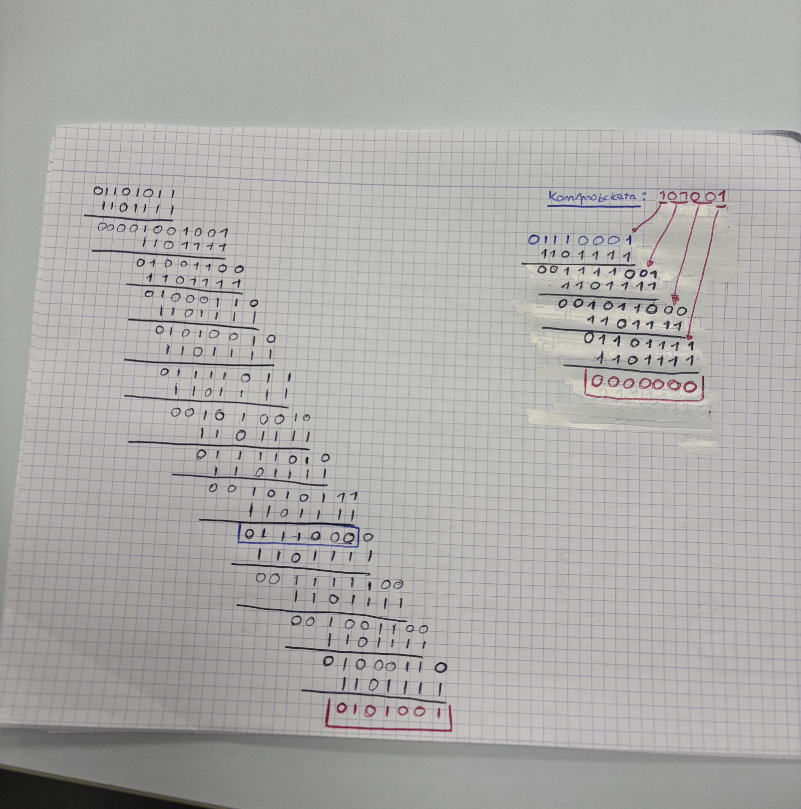
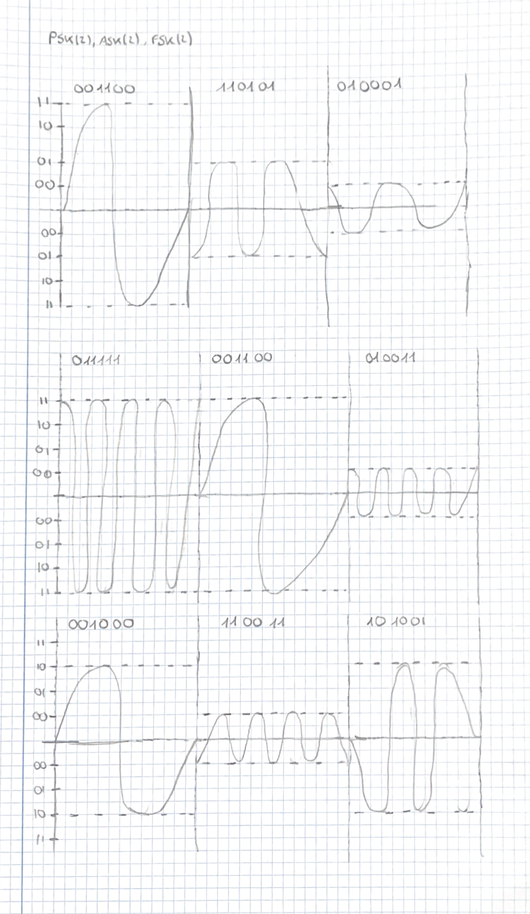
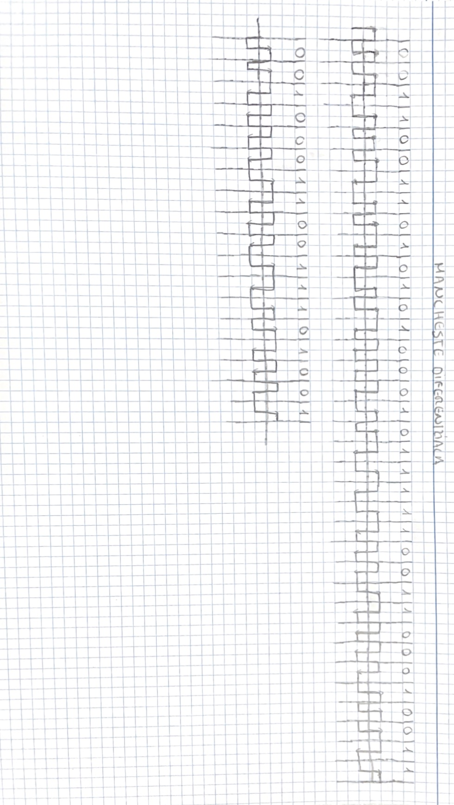

SARRERA
Ikasgai honetan, OSI ereduaren lehen bi mailak landuko ditugu. Horretarako, sare-kableak egingo ditugu patch panelera konektatzeko. Gainera, pasahitza ASCII kodearen bidez bitarrera bihurtuko dugu, CRC-6 aplikatuko diogu datuen transmisioan akatsak detektatzeko, eta datuak modulazioaren eta Manchester kodifikazioaren bidez irudikatuko ditugu.
ARIKETAK
ASCII

CRC

PSK2, ASK2, FSK2

MANCHESTER
